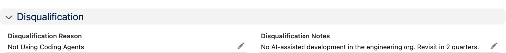
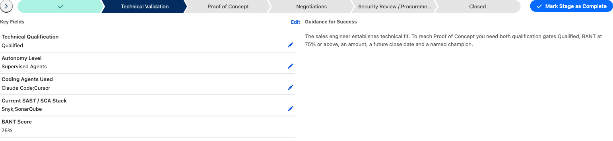
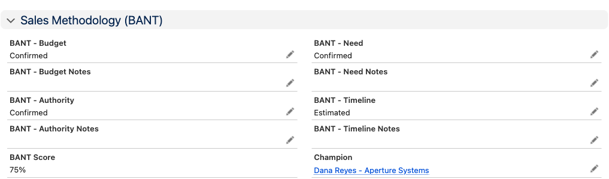
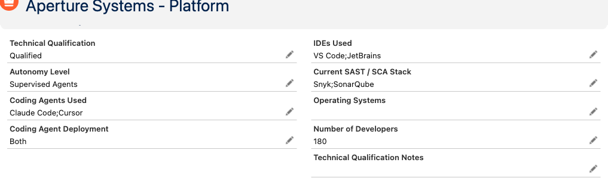
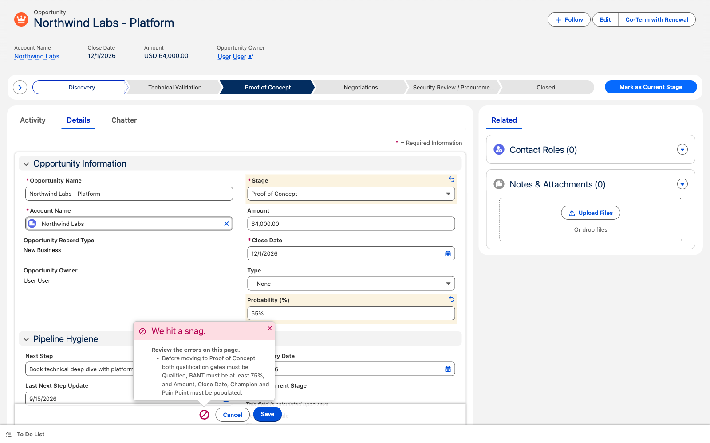
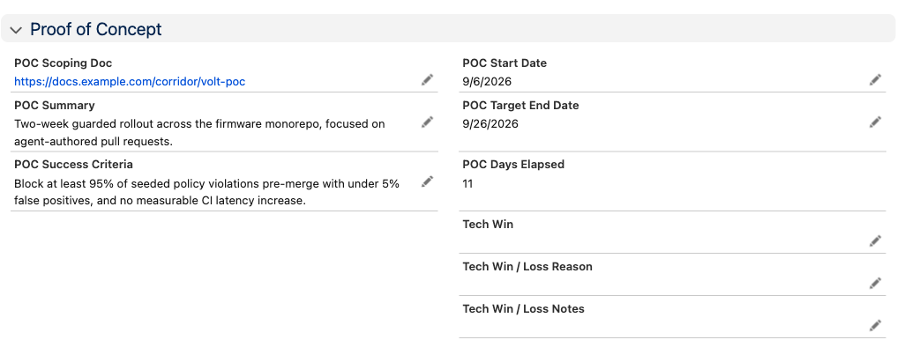
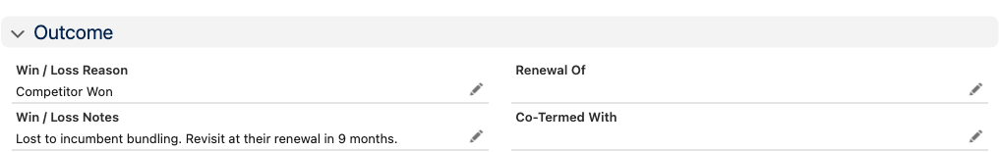
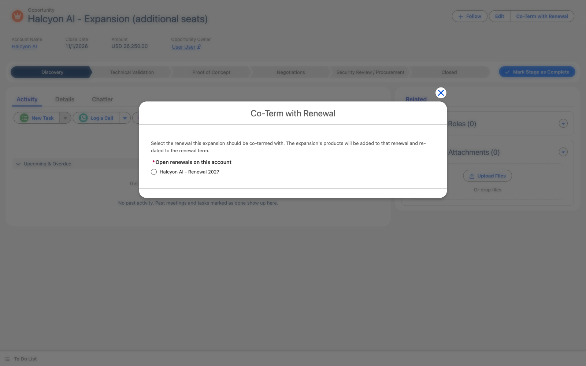

This is the decision point. Either it is worth pursuing, or it is not — and both answers are useful.
Click pathopen the lead›Convert — or set status to Disqualified
Set the lead status to Meeting Held.
If it is worth pursuing, click Convert. That creates the account, the contact and the opportunity in one go.
If it is not, set the status to Disqualified and pick a Disqualification Reason.

The Disqualification section. Reason plus a note — that is the whole job, and it stays on the lead forever.
Don't skip the reason
The lead is never deleted. Next time that company comes round — and they will — whoever picks it up can see you already spoke to them and why it didn't go anywhere. That is worth ten seconds now.
The bar across the top of every opportunity is your map. Click a stage and it tells you what that stage needs.
Click pathOpportunities›open the deal›click a stage on the path›expand the chevron
Click any stage to see its key fields and what's required to leave it. Mark Stage as Complete moves the deal on.

Hit the chevron on the left and the path opens up: the key fields for that stage on the left, editable in place, and what you need to move on on the right. You rarely need to scroll further than this.
Here is what each stage needs before you can leave it. Nothing else is enforced — fill in the rest as you learn it.
Stage
Before you can move on
Discovery
Business Qualification set to Qualified, and the Pain Point written down
Technical Validation
Technical Qualification Qualified, BANT 75%+, plus Amount, Close Date and Champion
Proof of Concept
Record the Tech Win result — yes or no, with a reason
Negotiations
Pricing approved (see below)
Security Review / Procurement
Nothing enforced — move it when the contract is signed
Closed Lost
A Win / Loss Reason

BANT only counts answers marked Confirmed. Estimated and Partial score zero — three out of four gets you to 75%.

The Technical Qualification section, filled in by your SE. You do not need to complete this yourself — but the deal cannot reach POC until they have.
Salesforce does this for you
Works out the BANT score — you just answer the four questions.
Records the date the stage changed, so days-in-stage is always right.
Fills in qualification answers from your Gong calls where it can. You can always overwrite them.
This is deliberate, and the message always tells you exactly what is missing. Here is what it looks like:
Click pathchange the Stage›Save›read the message

The error names every missing item at once, so you can fix them in one pass rather than one at a time.
If it says
Do this
Both qualification gates must be Qualified
Set Business Qualification yourself. Ask your SE to set Technical Qualification — it is their call, not yours.
BANT must be at least 75%
You need three of the four marked Confirmed. Check the BANT section — Estimated doesn't count.
Amount must be populated
Put in your best number. It can change later.
Close Date must be populated
It cannot be in the past.
Champion must be populated
Pick the contact who is arguing for you internally.
Pain Point must be populated
Write what is actually broken for them, in their words. No pain, no deal.
Pricing approval is required
Submit for approval and wait for the decision — see below.
Record a Win / Loss Reason
You're closing it lost and haven't said why.
You can always close a deal lost
None of these gates stop you disqualifying or closing something out. They only apply to moving a deal forward. If a deal is dead, close it — that keeps the forecast honest.
I'm running a POC
Account Executive & Sales Engineer
Move the deal to Proof of Concept on the day the customer actually gets access — that starts the clock.
Click pathopen the deal›Details›Proof of Concept section
Paste the link to your scoping doc. The full checklist stays in the doc, not in Salesforce.
Write a short summary so nobody has to open the doc to understand the deal.
Write the success criteria explicitly — what has to be true for this to count as a win.
Set a target end date.
When it finishes, set Tech Win to Yes or No, pick a reason, and add a note.

The POC section on a live deal. POC Days Elapsed counts itself from the day you moved the stage — there is no start date to remember.The technical picture your SE builds — what they run today, and how autonomous their development is.
A technical loss doesn't kill the deal
Setting Tech Win to No does not close anything. Deals are still won on commercial grounds. It flags the opportunity so someone can decide what to do — that decision stays yours.
Add a note with anything worth knowing if we go back in.

The Outcome section. Reason and notes — thirty seconds now, and the win/loss review actually has something to work with.
Why the reason is compulsory
It is the only thing a win/loss review has to work with. "Competitor Won" with a note saying who and why is worth more than a tidy pipeline.
I want to sell more to a customer
Account Executive
Click paththe account›New Opportunity›record type Expansion›Co-Term with Renewal
Create an opportunity on the account and set the record type to Expansion.
Add the products they're buying.
If they already have a renewal coming up, click Co-Term with Renewal.
Pick the renewal. Done.

It lists the open renewals on that account. Pick one and the expansion's products move onto it, re-dated to the renewal's term, with the total updated.
Do this rather than co-terming by hand
Lining up dates manually is where expansion revenue usually gets mis-dated — and it's the customer who notices, on their invoice.
The ones people ask about. Anything not listed is either obvious or filled in for you.
Field
What it's for
Who fills it
Pain Point
What is actually broken for them, in their words
You
Business Qualification
Is there a real project, budget and interest?
AE
Technical Qualification
Are they a technical fit?
SE
Autonomy Level
How autonomous their development flow is today
SE
Current SAST / SCA Stack
What security tooling they already run
SE
BANT — the four
Only Confirmed counts toward the score
AE, or Gong
BANT Score
Worked out for you. 75% is the bar for a POC
Automatic
Champion
Who is arguing for you when you're not in the room
AE
Next Step
The single next thing that has to happen
AE
Days in Current Stage
How long it's sat there
Automatic
POC Success Criteria
What has to be true for the POC to count as a win
AE / SE
Tech Win
Did the POC succeed technically?
SE
Contract dates
Build next year's renewal — get them right
AE
Win / Loss Reason
Why it went the way it did
AE
Last Sales Activity
When someone in sales last spoke to them
Automatic
What changed from Monica
Worth knowing
In Monica
Now
A booked meeting was an opportunity
Meetings live on the lead. An opportunity is created once you've spoken to them and it's real — so pipeline actually means pipeline.
You could move a deal whenever
Stages have requirements. The message always tells you what's missing.
Renewals were remembered, or weren't
Winning a deal creates the renewal automatically.
Activity lived in your inbox
Email and meetings land on the record on their own.
Pricing approvals happened in Slack
They happen on the record, with a history.
Two things to know about this demo org
Team notifications appear in Salesforce rather than Slack — Slack gets connected in your own environment. And product prices here are placeholders until the pricing sheet is finalised.
Built by SaaScend for Corridor · Salesforce GTM Foundation, Phase 1
Something here not match what you see? Email tej@saascend.com and it'll get fixed.